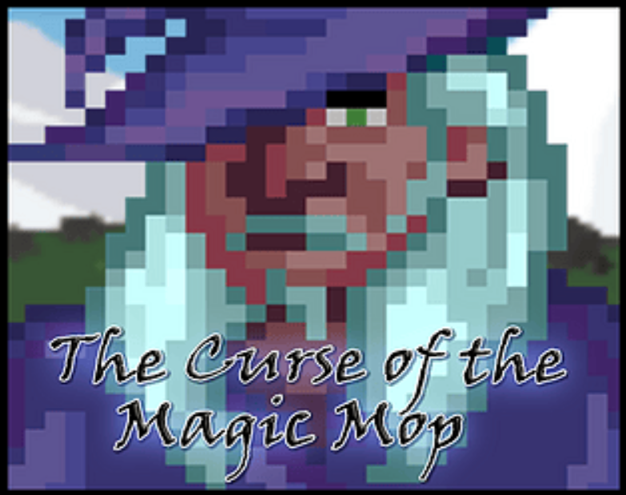

The Curse of the Magic Mop is a charming and quirky game made using the Gamemaker engine.
Players assume the role of an unlikely hero—a janitor cursed by a magical mop! What starts as an ordinary cleaning job soon
turns into an epic quest to uncover secrets, solve puzzles, and battle mischievous messes brought to life by the curse.
Armed with this enchanted cleaning tool, you’ll navigate through magical environments, uncover hidden stories, and encounter
humorous scenarios. Along the way, you’ll learn that even mundane objects like a mop can hold incredible power!

Key Features
Unique Gameplay: Mixes puzzle-solving, exploration, and light combat mechanics.
Magical Settings: Quirky, enchanting environments filled with mysteries to uncover.
Humor and Charm: Playful dialogue and amusing encounters throughout the game.
Breaking the Curse: The ultimate goal is to find a way to break the magical spell binding the mop.
Development Details
Date Created: Friday, November 15th, 2024 Engine: Gamemaker Platform: The game is available for download on Itch.io.
YouTube Video
Watch a gameplay video for The Curse of the Magic Mop below:
How to Play
Navigate Levels: Explore each magical environment to uncover secrets and clues.
Use the Mop: Solve puzzles and battle enemies using the enchanted mop's unique abilities.
Break the Curse: Gather the tools and knowledge needed to lift the spell and complete the story.
Technologies Used
For this game, I used:
Gamemaker: To build the game and implement its mechanics.
Photoshop & Pixilart: For character and environment design.
Playtesting: Rigorous testing to ensure engaging puzzles and smooth gameplay.